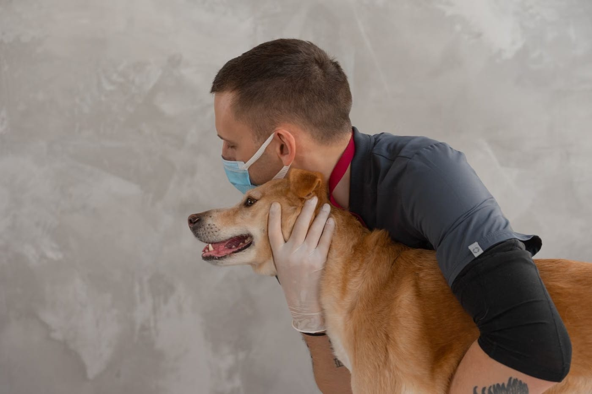
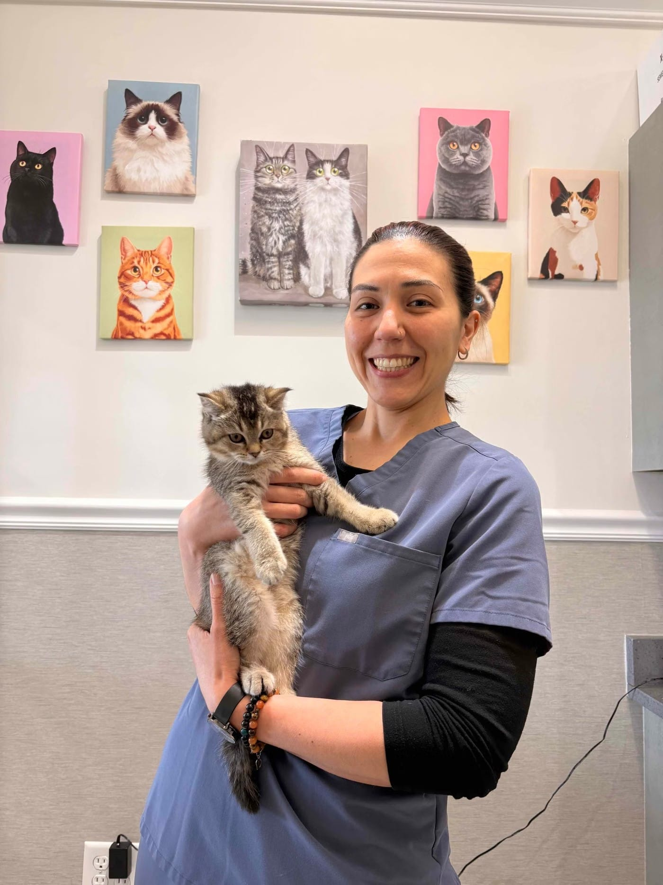

Kedi ve köpekleriniz için muayene, aşı ve tedavi. Sorularınızı sabırla yanıtlayan, güler yüzlü bir ekip. Haftanın her günü açığız.

Dostunuzun sağlığı için ihtiyaç duyduğunuz temel hizmetler tek çatı altında.
Genel sağlık kontrolü, cilt sorunlarında mikroskobik inceleme ve tedavi planı.
Karma ve kuduz aşıları, iç-dış parazit uygulamaları ve aşı takviminin takibi.
Yavru bakımı, beslenme önerileri ve kilo takibi. Her soruya sabırla yanıt.

"İlgili, güven veren ve gerçekten hayvan dostu bir klinik. Sorularımı sabırla cevaplarlar ve hep içim rahat şekilde ayrılmamı sağlarlar."
| Pazartesi | 10:00–20:00 |
| Salı | 10:00–20:00 |
| Çarşamba | 10:00–20:00 |
| Perşembe | 10:00–20:00 |
| Cuma | 10:00–20:00 |
| Cumartesi | 10:00–20:00 |
| Pazar | 10:00–19:00 |